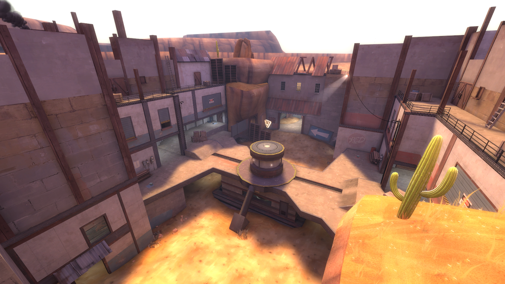

Maps
Team Fortress 2 has lots of maps, but here I’ll focus the ones that are used most often in the competitive scene.
Gamemodes:
King of the Hill (koth)
Koth is a gamemode that is very simple: there is a point in middle of the map, team to hold on it till time runs out (3 minutes) wins. Usually played in a best of 5 scenario.
| Product | |
|---|---|
| Lakeside |
Payload (pl)
When on RED defend payload from being pushed. If on BLU push it to the end of the map. Goal of heavy is to help push with team or to defend an area and act as a secondary sentry.
| Upward | |
|---|---|
| Borneo |
Control points (5cp)
5cp is not really used now-a-days in highlander but used almost only in 6s. Two teams cap points, the team in control of all 5 wins round. Job of heavy is usually to push out with team or to defend with team, depending on scenario. But in the event of a stalemate you stay back to protect your team from any sneaky players trying to make an ambush so your team doesn’t lose an advantage.
|  | Gullywash |
|---|